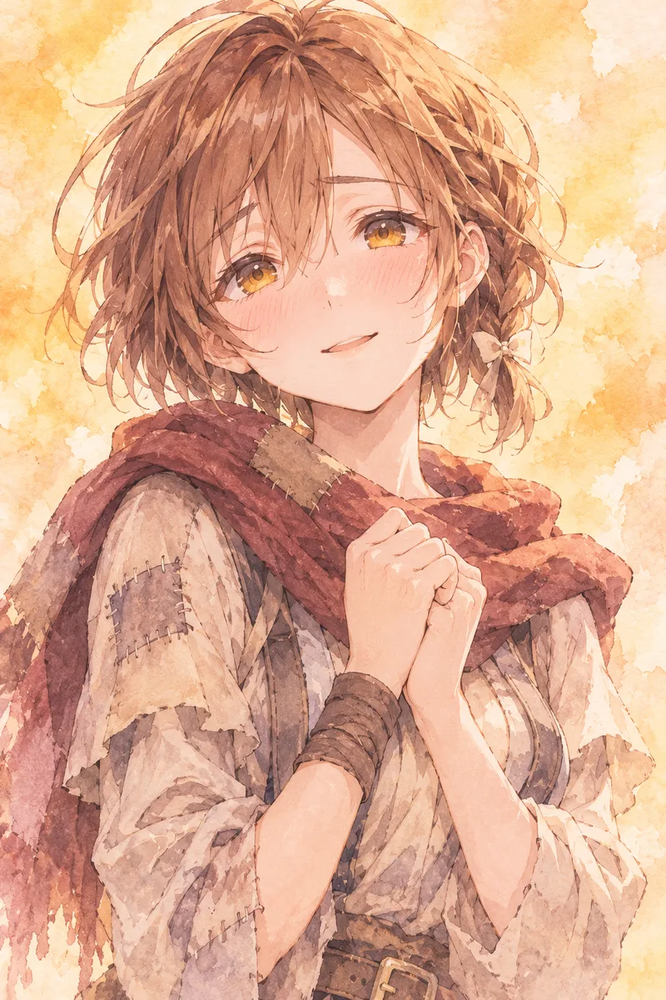
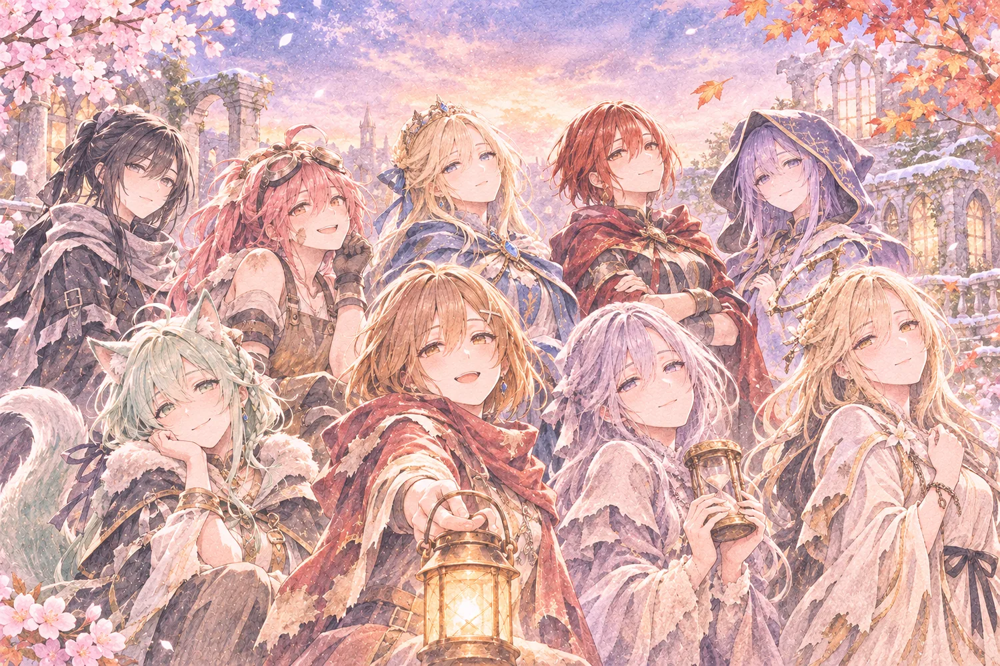
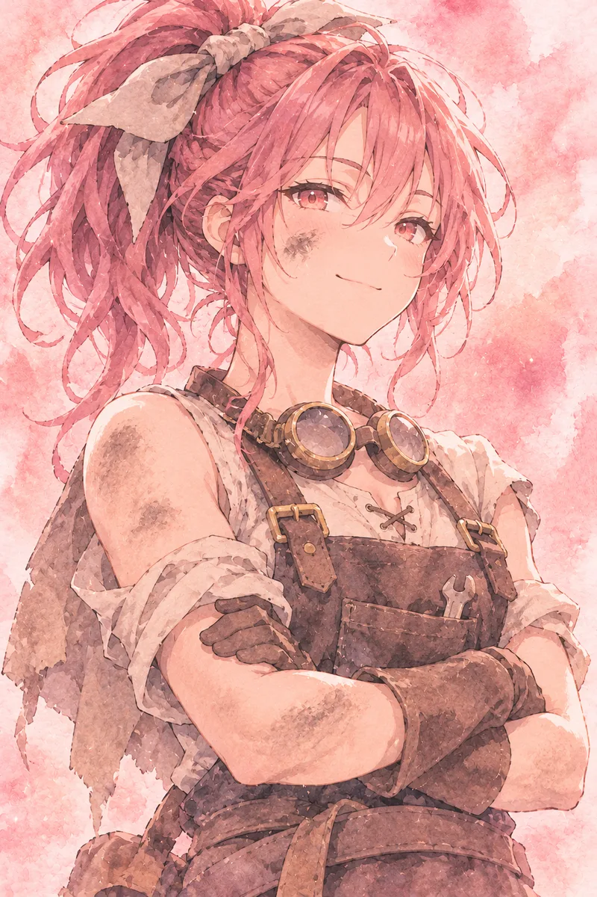
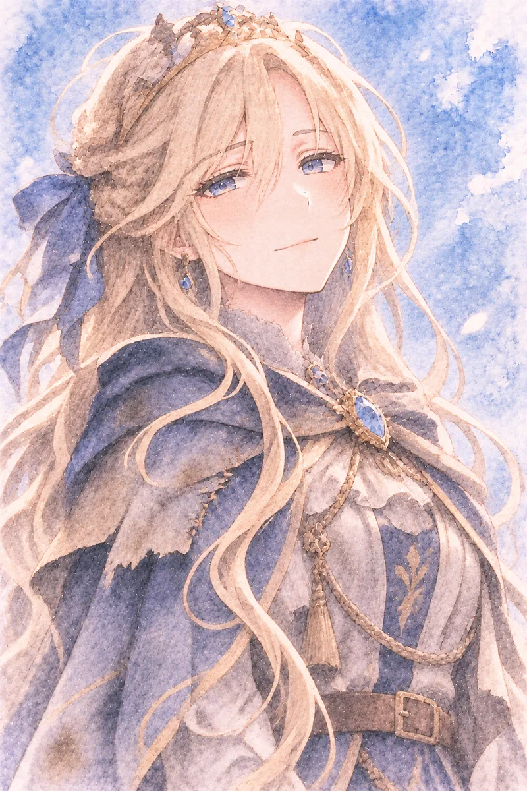
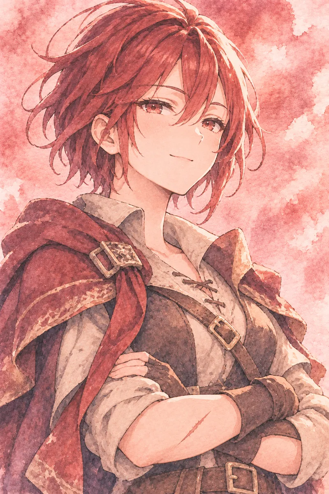
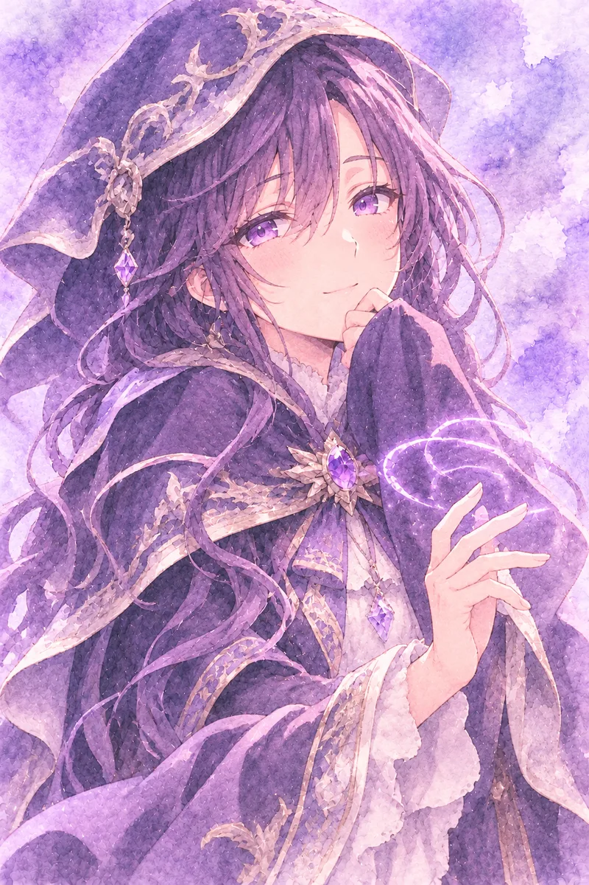
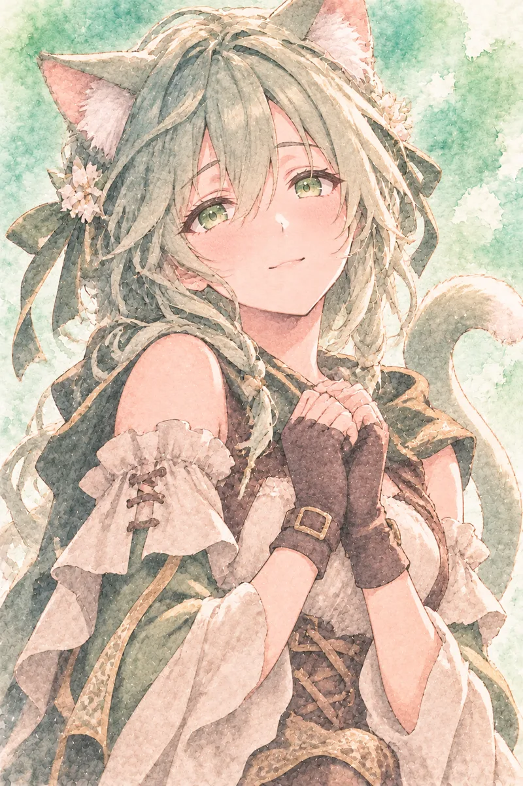
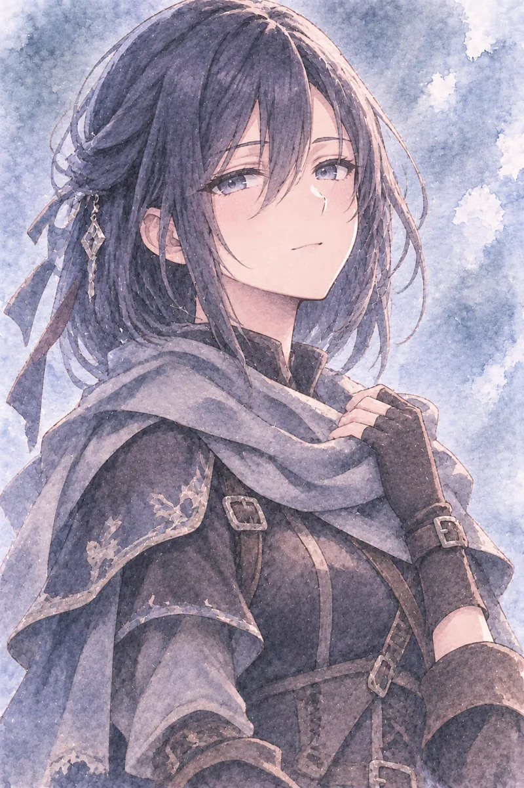
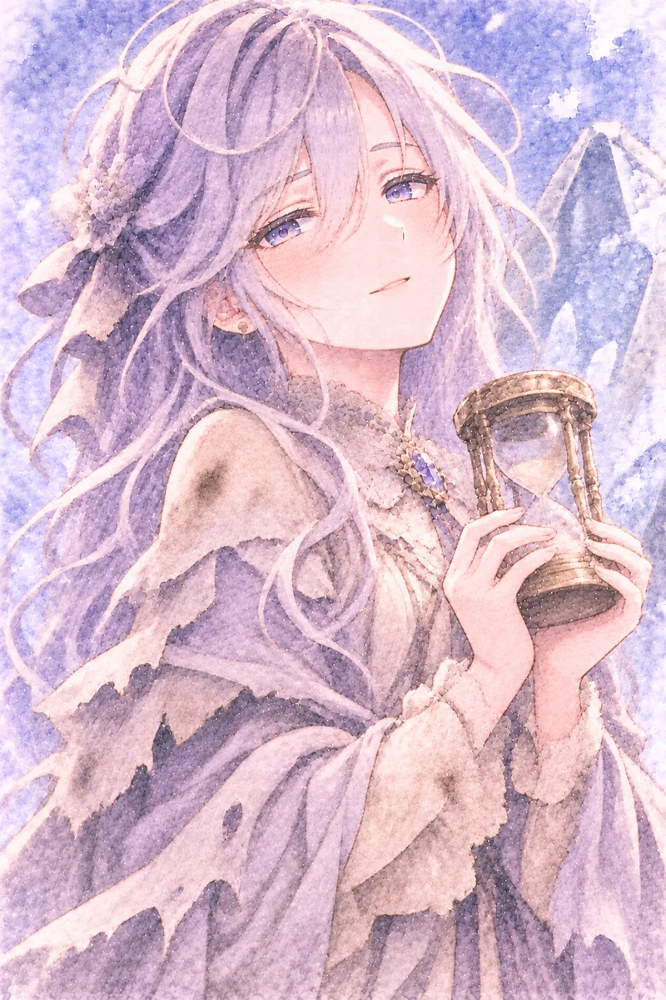
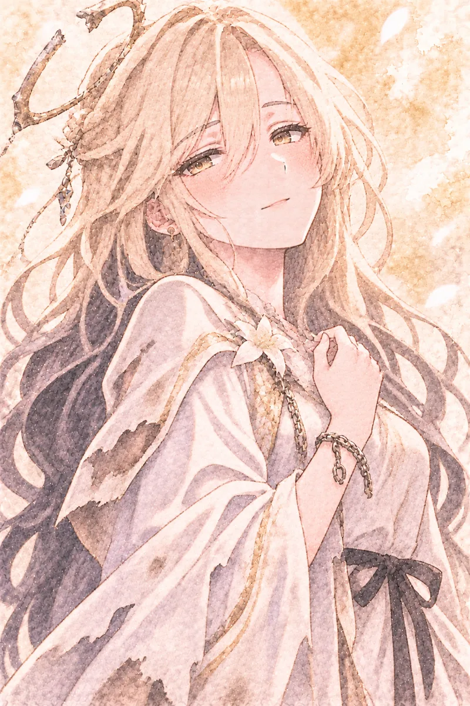

マイア
スラム街で日銭を稼いでいた少女
ひもじさを知る少女に、温かい食事と、季節の行事を一つずつ贈っていく。春の花見から、冬の雪の夜まで。

「見捨てない」という選択肢を、差し出すだけの物語。
『異世界パラダイス幸福度クロニクル』は、選択肢を選びながら読み進める、素朴な癒し系のインタラクティブノベルです。スラムの少女、居場所を失った元王女、役目を終えて忘れられた勇者。何かを失い、社会の片隅で生きていた9人の少女たちが登場します。
主人公ができるのは、彼女たちを「見捨てない」ことだけです。温かい食事を分けたり、そっと肩にコートをかけたり、約束をしたり。小さな親切が、ときどき想像を超えて、誰かの心を動かします。
この作品は、はぜるが最初に作ったインタラクティブノベルで、短く読める「ミニデモ」として公開しています。のちに作った作品ほど派手な仕掛けはありませんが、そのぶん、肩の力を抜いて読める素朴さがあります。
最初は4人から遊べます。読み進めて幸福度をためる、または4人をひとつずつ読み終えると、さらに4人が現れます。最後の1人は、その先で解放されます。

スラム街で日銭を稼いでいた少女
ひもじさを知る少女に、温かい食事と、季節の行事を一つずつ贈っていく。春の花見から、冬の雪の夜まで。

工房を追われた見習い鍛冶師
借金の形に連れ去られかけたところを助ける。意地っ張りで、施しよりも「仕事」を選びたがる職人。

祖国を失った元王族の難民
ぼろをまとっても、背筋だけはまっすぐな元王女。誇りをどう守るかで、物語が二つに分かれる。

役目を終え、忘れられていた勇者
用済みとして、王宮の奥に忘れられていた勇者。休むことを怖がる彼女に、剣を置く日は来るのか。

契約に失敗し、恐れられた魔導師
魔力の暴走で「災厄の魔女」と呼ばれた魔導師。雷雨の夜は、今でも少しだけ怖い。

種族を理由に差別されていた獣人
自由になって、最初に野原を駆け出した少女。仲間を探すか、ここを家にするか。

感情を殺すよう育てられた元暗殺者
桜を見て「綺麗とは、こういう時に使う言葉ですか」と尋ねるところから、物語が始まる。

呪いで長い眠りについていた少女
数百年の眠りから覚めた少女。何もかも変わった世界で、変わらないものをひとつ見つける。

初代聖女にして、封じられた古の魔王
最後に現れる、いちばん静かな一人。聖女とも魔王とも呼ばれた彼女が、「ただの自分」を探す。
人物との関係は、幸福度に応じて5段階の「絆ランク」で表されます。ランクが上がるたびに、画面の背景色も少しずつ変わっていきます。
| ランク | 目安 |
|---|---|
| 警戒 | 最初の状態 |
| 顔見知り | 50ポイント以上 |
| 友達 | 100ポイント以上 |
| 親友 | 180ポイント以上 |
| 唯一無二の相棒 | 250ポイント以上。特別な結末が見られる |
・この作品は、フィクションです。登場する国、人物、団体は、すべて架空のものです。
・作中のイラストは、画像生成AIを使って制作し、作者が選定・調整しています。BGMは、AI音楽生成サービス「Suno AI」で制作しています。
・この作品は、シリーズの初期に作った、短いミニデモ版です。
・保存データは、お使いのブラウザの中にだけ保存されます。ブラウザの閲覧データを消去したり、別の端末で開いたりすると、記録は引き継がれません。
はい、すべて無料です。登録やログインも要りません。
はい、スマホでの操作を中心に作っています。タップだけで進められます。パソコンのブラウザでも遊べます。
どの人物からでも大丈夫です。気になる境遇の人から選んでみてください。
画面右上のスピーカーボタンで、オン・オフを切り替えられます。ブラウザの設定によっては、最初のタップのあとに音が流れ始めます。
最初の4人を、それぞれ1ルートずつ読み終えると、次の4人が現れます。幸福度の合計がたまっても現れます。
エンディングを見るたびに、自動でセーブされます。キャラクター選択画面の下のほうに、セーブデータをリセットするボタンがあります。